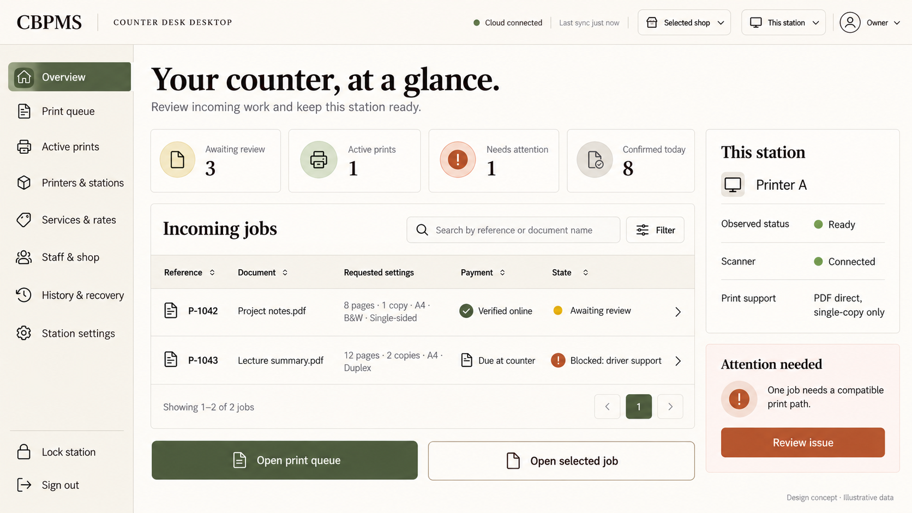
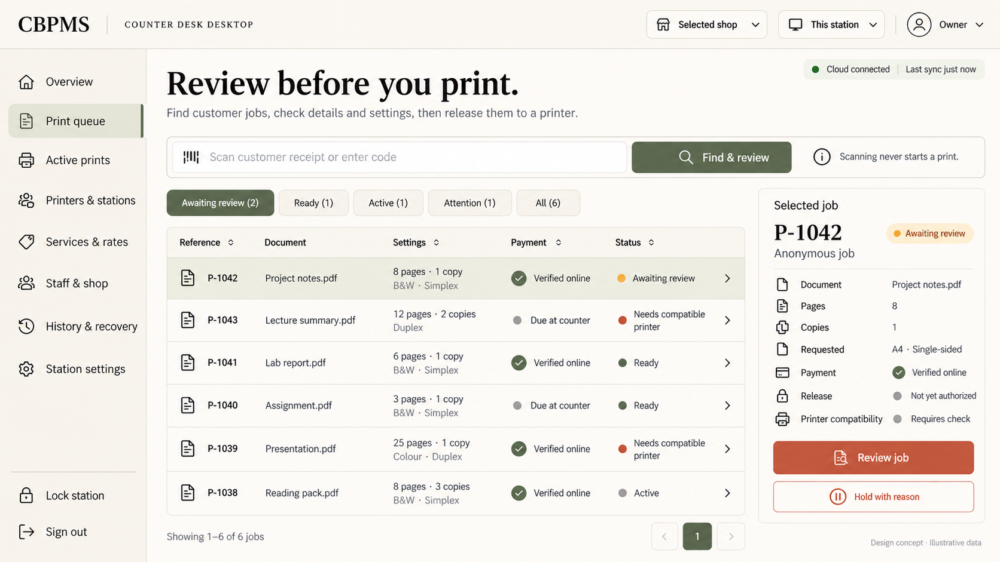
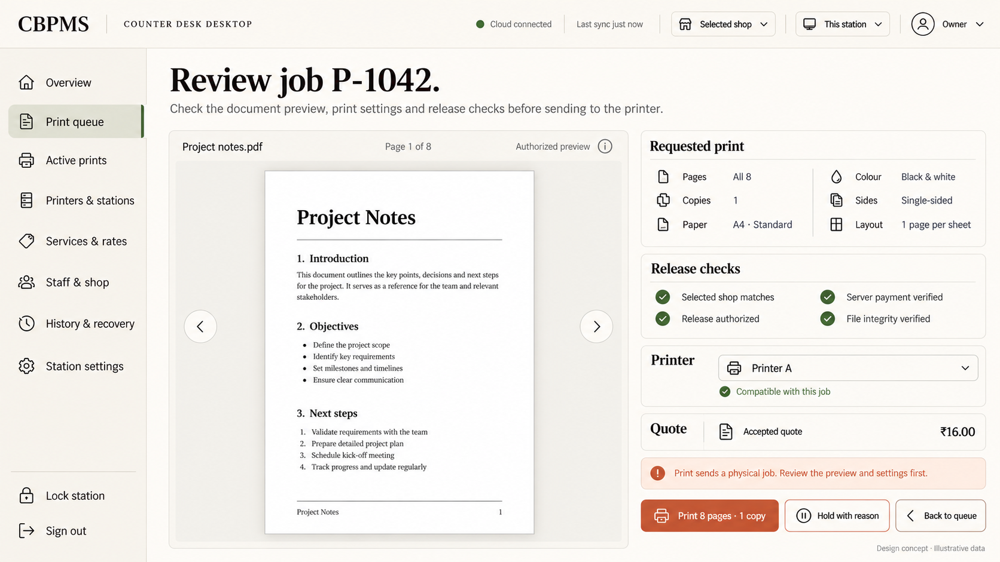
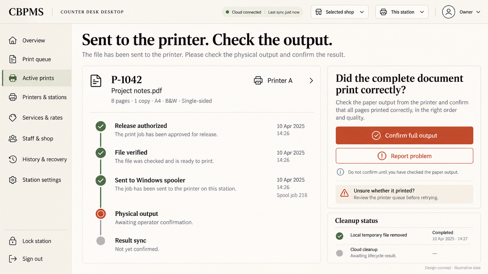
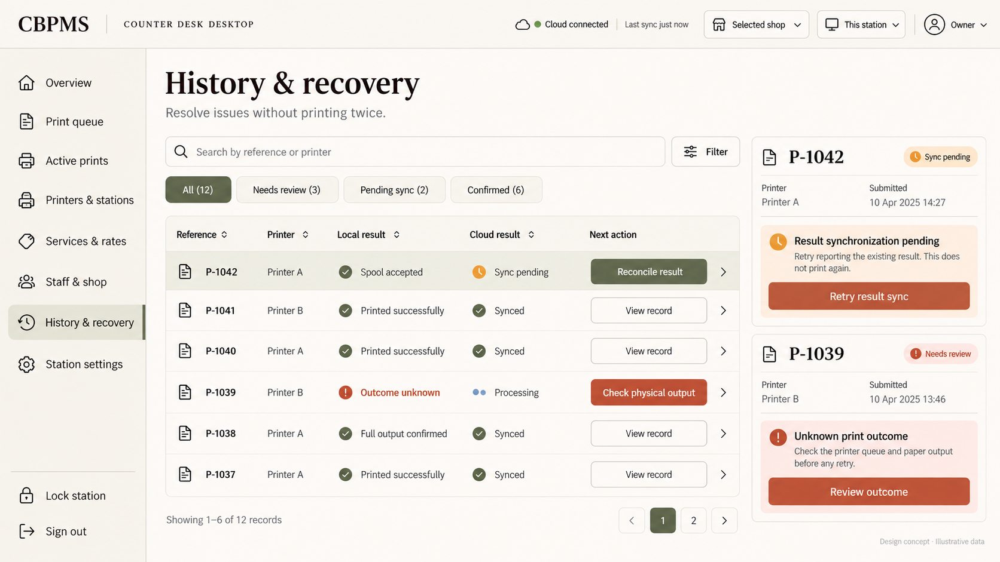
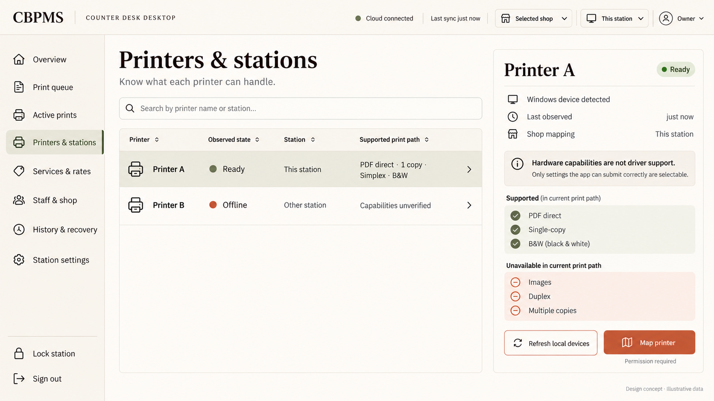
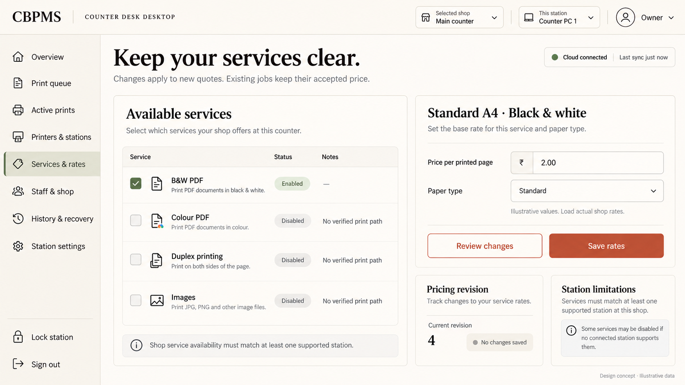
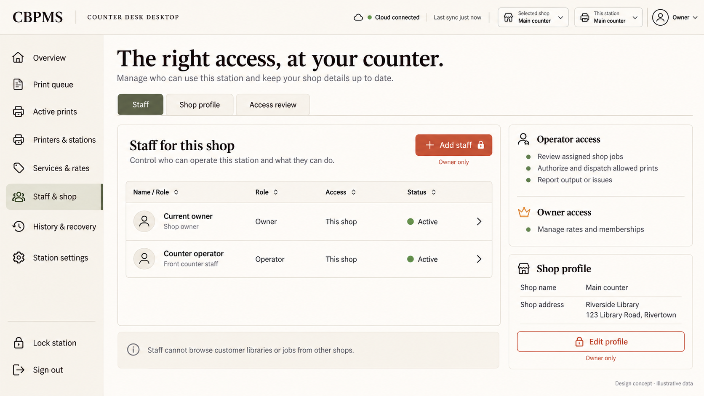
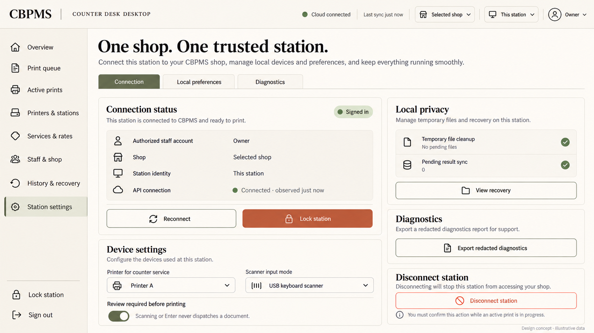

Complete workflow and implementation specification · Copy-paste IDE prompt · Generation prompts
Owner workflow: connect an authorized station, open or scan a job, review its settings and eligibility, authorize file access, check the actual preview and printer support, explicitly print, verify the paper output, and reconcile the recorded result.
Owner overview
Owner management overview; no physical print action.

Queue and release desk
Select or scan a job to review it. Scanning never dispatches.

Print decision and authorized preview
Authorized preview, requested settings and release/compatibility checks before deliberate Print.

Active print monitor
Spool acceptance and complete physical output are distinct; confirm or report an issue.

History and recovery
Retry reporting without reprinting; reconcile uncertain physical outcomes.

Printers and stations
Actual device observations and effective driver support, not assumed capabilities.

Services and rates
Owner-only persisted services and rates; accepted job quotes do not change.

Staff and shop
Server-checked memberships and shop profile; no cross-shop/library access.

Station setup and settings
Guided station setup, lock, local preferences and redacted diagnostics.
